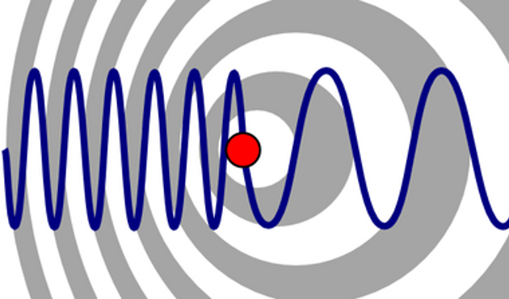
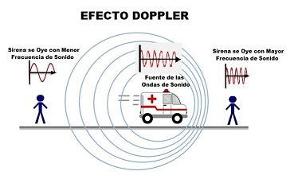
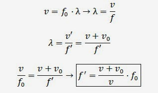
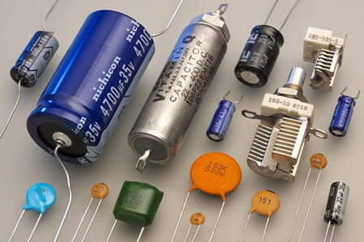

El efecto Doppler es el cambio en la frecuencia de una onda que se produce cuando el emisor está en movimiento. Es decir, el receptor, estando estático, percibe los cambios en las ondas según la distancia hasta el emisor, que está en movimiento.
La primera referencia que tenemos sobre el efecto Doppler es el estudio realizado por el físico austríaco Christian Andreas Doppler, en 1842. En él, Doppler relata los cambios de tono en el sonido de una locomotora: se agudiza (aumenta su frecuencia) al estar más cerca, y se agrava (disminuye su frecuencia) al alejarse.
Años después, en 1848, el físico francés Armand Hippolyte Louis Fizeau, descubrió que ocurría algo similar con las ondas electromagnéticas. Por este motivo, el efecto Doppler es también conocido como el efecto Doppler-Fizeau.

Un ejemplo muy sencillo para entender el efecto Doppler es el sonido de la sirena de una ambulancia. Aunque la ambulancia se mueva a solo 50 km/h, ya es posible notar el cambio de un tono agudo a uno grave justo cuando pasa a nuestro lado. Ocurre igual con camiones de bomberos o coches de policía.

La ecuación para el corriemiento Doppler tanto con una fuente en movimiento como con un observador en moviemiento está dada por f' = f(v ± vo)/(v ∓ vs) donde f' es la frecuencia recibida, f es la frecuencia original, v es la velocidad de la onda, vo es la velocidad del observador y vs velocidad de la fuente.

Electrostatica:
Se entiende por electrostática a la rama de la físicaque se encarga del estudio y análisis del comportamiento de las cargas eléctricas en estado de equilibrio o, lo que es lo mismo, los efectos que se generan en los cuerpos como resultado de sus cargas eléctricas, ya sean de atracción o rechazo. A este efecto se le conoce como fenómeno electrostático.
La electricidad estática se entiende como el fenómeno que ocurre entre dos cuerpos que acumulan carga eléctrica, ya sea por procesos de inducción o fricción. Esta acumulación de energía se puede producir, por ejemplo, si dos materiales se frotan entre sí, pasando los electrones de una superficie a otra a través del diferencial de nivel energético.
Capasitadores:
Al colocar un capacitor o condensador eléctrico en un circuito que tiene una corriente activa, los electrones del lado negativo se acumulan en la placa que se encuentra más cercana a ellos.
Cuando la placa ya no puede sostenerlos, pasan al dieléctrico y a la otra placa, por lo que los electrones son desplazados devuelta al circuito, a través de una descarga.
Las placas conductoras del capacitor están conectadas a las terminales del elemento pasivo y el material dieléctrico o aislante se coloca entre ambas placas, las cuales almacenan la carga eléctrica hasta que se conecta una carga en el capacitor.
La carga que almacena un condensador o capacitor es directamente proporcional al voltaje o la tensión aplicados. Asimismo, su capacidad es proporcional al área de la placa e inversamente proporcional a la distancia existente entre ambas placas.
Otro factor importante de estos dispositivos es la capacitancia, es decir, la capacidad del componente para almacenar energía en forma de carga eléctrica. El valor de la capacitancia de un condensador eléctrico se mide en faradios y es la relación entre la carga eléctrica almacenada y la tensión (diferencia de potencial) entre ellos.

FRECUENCIA:
En ondas sonoras, la frecuencia se relaciona con el tono. Las ondas con frecuencias más altas tienen tonos más agudos, mientras que las ondas con frecuencias más bajas tienen tonos más graves.
En electromagnetismo, la frecuencia está asociada con la longitud de onda de la radiación electromagnética.
Por ejemplo, en el espectro visible, las frecuencias más altas corresponden al color violeta, mientras que las frecuencias más bajas corresponden al color rojo.
En mecánica, la frecuencia puede referirse al número de oscilaciones por segundo de un sistema oscilante, como un péndulo o un resorte.
La relación entre la frecuencia (f), la longitud de onda (λ) y la velocidad (v) de una onda está dada por la ecuación:
𝑣
=
𝑓
⋅
𝜆
v=f⋅λ
Donde:
𝑣
v es la velocidad de la onda.
𝑓
f es la frecuencia de la onda.
𝜆
λ es la longitud de onda de la onda.
Esta ecuación muestra que la frecuencia y la longitud de onda están inversamente relacionadas en un medio dado con una velocidad constante.
Longitud De Onda:
La longitud de onda (
𝜆
λ) es una medida de la distancia entre dos crestas (o dos valles) sucesivas en una onda. Se expresa típicamente en unidades de longitud, como metros (m), centímetros (cm) o nanómetros (nm), dependiendo del contexto.
La longitud de onda está relacionada con la frecuencia (
𝑓
f) y la velocidad (
𝑣
v) de una onda mediante la ecuación:
𝑣
=
𝑓
⋅
𝜆
v=f⋅λ
Esta ecuación muestra que, a una velocidad dada, la longitud de onda y la frecuencia están inversamente relacionadas: a mayor frecuencia, menor longitud de onda, y viceversa.
Por ejemplo, en el espectro electromagnético, la luz visible tiene longitudes de onda que van desde aproximadamente 400 nanómetros (violeta) hasta aproximadamente 700 nanómetros (rojo). En este caso, la luz roja tiene una frecuencia más baja que la luz violeta, ya que su longitud de onda es mayor.